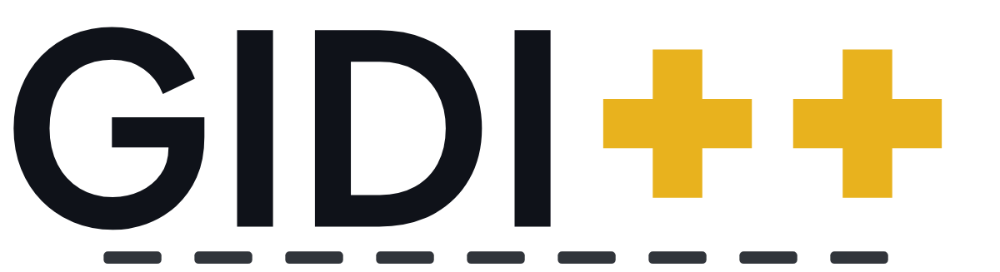
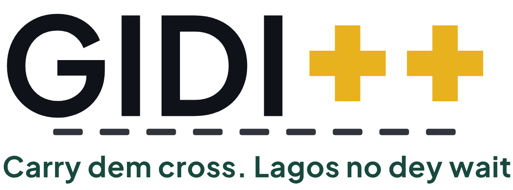
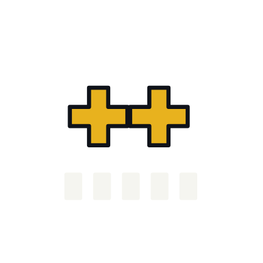
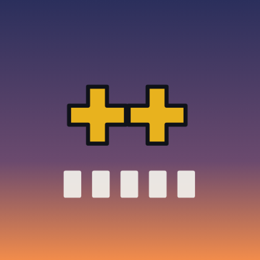
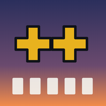
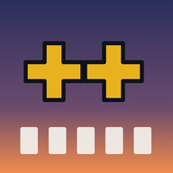

Logos & app icons
The GIDI++ wordmark: Plus Jakarta Sans Bold letters (outlined to paths, so the SVGs work without the font), two Danfo-yellow plus signs and a zebra-crossing underline. The app mark is the ++ crossing on a dusk tile.
Wordmark & lockups





- Clear space: the height of one plus sign on every side. Minimum size: 120 px wide on screen (24 mm in print); below that use the mark alone.
- Pluses are always Danfo yellow
#E8B21Eexcept in mono versions. Never recolour the pluses red or green, add a drop shadow or stretch the letters. - Tagline lockup: “Carry dem cross. Lagos no dey wait.”
App mark
Dusk gradient
#2B2F5C → #6B4A6E → #F28C4B, pluses #E8B21E with ink outline, five crossing stripes.iOS (logos/app/ios/)


1024 is the only size Xcode 14+ needs; the full legacy set is included. Shown with the iOS corner mask for preview only: files are square.
Android adaptive (logos/app/android/)


Foreground 432 (108 dp)Background 432


Adaptive: circle maskAdaptive: squircle maskForeground art sits inside the 66 dp safe circle of the 108 dp layer. Vector layers: foreground.svg, background.svg. Legacy mipmaps 48–192 px included.


Web favicons & PWA (logos/app/web/)



apple-touch-icon.png

pwa-192.pngpwa-512.pngpwa-maskable-512.png

favicon.ico (16/32/48) · manifest.webmanifest with "orientation": "landscape" and "display": "fullscreen". This site uses these favicons.